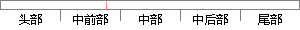

这就使得在计算反向传播时得到接近0的梯度，导致权重几乎没有更新，我们就无法递归去学习数据。
片段位置图

相似结果|
1
原句片段：这就使得在计算反向传播时得到接近0的梯度，导致权重几乎没有更新，我们就无法递归去学习数据。
相似片段 1：这就使得我们在反向传播算法中反向传播接近于0的梯度,导致最终权重基本没什么更新,我们就无法递归地学习到输入数据了。另外,你需要尤其注意参数的初始值来尽量避免...
相似片段 2：这就使得我们在反向传播算法中反向传播接近于0的梯度,导致最终权重基本没什么更新,我们就无法递归地学习到输入数据了。另外,你需要尤其注意参数的初始值来尽量避免...
相似片段 3：这就使得我们在反向传播算法中反向传播接近于0的梯度,导致最终权重基本没什么更新,我们就无法递归地学习到输入数据了。另外,你需要尤其注意参数的初始值来尽量避免...
相似片段 4：这就使得我们在反向传播算法中反向传播接近于0的梯度,导致最终权重基本没什么更新,我们就无法递归地学习到输入数据了。另外,你需要尤其注意参数的初始值来尽量避免...
相似片段 5：这就使得我们在反向传播算法中反向传播接近于0的梯度,导致最终权重基本没什么更新,我们就无法递归地学习到输入数据了。另外,你需要尤其注意参数的初始值来尽量避免...
|
※ 片段修改建议 ※
近似词参考：- 计算：计较 较量争论 盘算
- 传播：传布 流传
- 得到：获得
- 接近：靠近
- 导致：致使
- 我们：咱们
- 无法：没法
- 归去：回去
- 学习：进修
系统自动生成语句：这就使得在计较反向传布时获得靠近0的梯度，致使权重几乎没有更新，咱们就没法递回去进修数据。
注：本片段修改建议为系统自动生成，仅供参考。